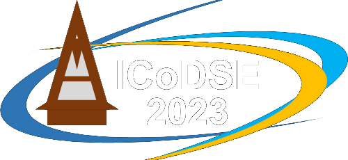
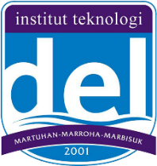
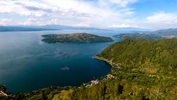

Menu
Keynote
Committee
Important Dates
Call for Papers
Instruction for Authors
Registration
Organizers
Acommodation
Organizers
Institut Teknologi Bandung

Institut Teknologi Del
Featured

Call for Papers
Important Dates
Instruction for Authors
Registration
Acommodation and Transportation